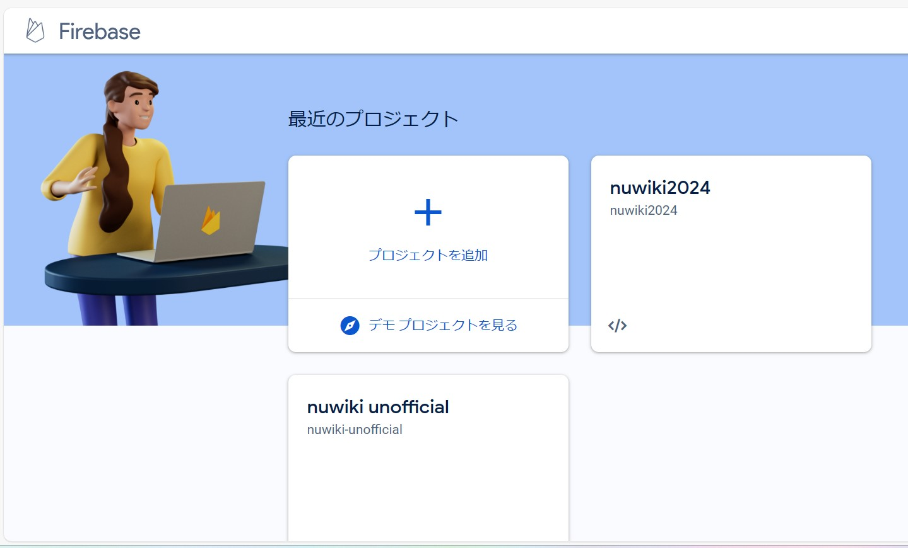

初めに
お役立ち情報
部活動/サークル情報
コラム/各種まとめ
ホーム
部活動/サークル関係者へ
名大生のヒトリゴト
名大生が徒然なるままに書き上げた力作コラムまとめ。ジャンル、内容も多種多様。お気に入りのライターを見つけよう。
Vo.1 名大非公式wiki完成までのログ
このコラムを書いた人
初めまして。ライター兼非公式wikiもう一人のサークル長rukiです。wiki完成させるまで本当に長い道のりを辿った気がします。
サークル長のロズ、CSS担当のいずさん、参謀ののみあ君、そしてこのサイトにログインしてくれたあなた、心から感謝します。
wiki作ろうって計画だけ立てたのは実は2023年の8月
よくある話ですよね。初めの1週間だけやる気に満ち溢れて、そこから先は単調減少現象。その魔法に僕たちも無論かかっていた・・わけではなく。
あ、そうそう、メイン開発者の僕たち、C++やってて手が回らなかったんだったね。無論いまではただの言い訳ですね。あ、C++で思い出した。大学生だし、プログラミング初めてみたいな
って思ったそこのあなた!!ぜひAtCoderを触ってみよう。きっと何らかの形で報われるよ。
それであっという間に夏休みが終わり秋学期。いざ始まったプログラミングの授業はまるでAtcoderのA問題。でもテストはペーパーテスト。はよ改善しろhsgw。
結局人を集めたのに誰も動かなかったので、一念発起して春休みに0からコーティングをスタート。しかし・・・
1つの気付きで、今までの努力がパーになるってこと、あるよね。
皆さんは、努力は報われない、誰も認めてくれないって経験ありますか。だからって走るのをやめてしまうのか？元ネタ分かった人、仲良くしましょう。

さて、画面左に表示されているものはですね、僕たちが一週間かけて見つけたバックエンド開発ツール、firebaseですね。以前サーバーとしてst〇rfreeというサーバーを
使っていたのですが、こいつがなかなか曲者で、httpsじゃなくてhttp表示だったんですね。何が違うかって？リンクの隣にこう書いてあるのさ。「このサイトは安全ではありません」って。後者は誰でもデータを盗めるんですよ。初学者なんて最初にフロントエンド(デザイン系)
を推し進めたいですから。
セキュリティなんてもうどうでもよかったらしい。否応なしに振り出しへ戻る。もちろんデバフはかかったまま。やめてしまいたい理由の一つですね。十も百も千もあったケド何とか持ちこたえました。頑張った自分。頑張った皆。
バックエンド担当者の苦悩
皆さんはあらかたこのサイトを閲覧できたでしょうか。まさかいきなりコラムに行く方なんて何人たりともいないと信じていますが。その中に新歓カレンダー機能やログイン機能があったじゃないですか。あれものすごーーーーく実装が
大変だったんですよ。だって何にも知らないんだもん。無知は恥なのは知っているけど、JSとかfirebaseの操作方法なんてつゆ知らず。バックエンド開発メンバーはサークル長の僕とロズwith AI。JavaScriptとの戦いの火ぶたが切って落とされたがconsole.logの時点で「???」。
指示通りに動いてくれないAI。バイト終わりに徹夜で作業するろず。流れていくATcoderのコンテスト。春休みBereal,8割以上はろずと2ショット。ワケワカンナイヨー!(cv.Machico)
web開発をかじって思ったこと
今までc言語やpythonといった、自分たちの生活に直接干渉しにくい言語を学んできた。もちろん、プログラムが実行できた時はすごい達成感を覚えたし、これがプログラミングなのか!
と満ち足りた気持ちを抱いていた。でも、それとはまた別物の贅沢な感情、「自分自身で生み出した、オリジナルのサイト」を完成させ得た言葉に表すのは難しい感情が波のように僕の心を打ったらしい。
ちょっと稚拙な文学的表現が混じってしまったが、総合的にすごく有意義な時間を過ごせたと思う。このサイトの運営はしばらくは続けるつもりなので、応援よろしくお願いします。
他の投稿は↓から
TOFELの全てを洗いざらい解説。